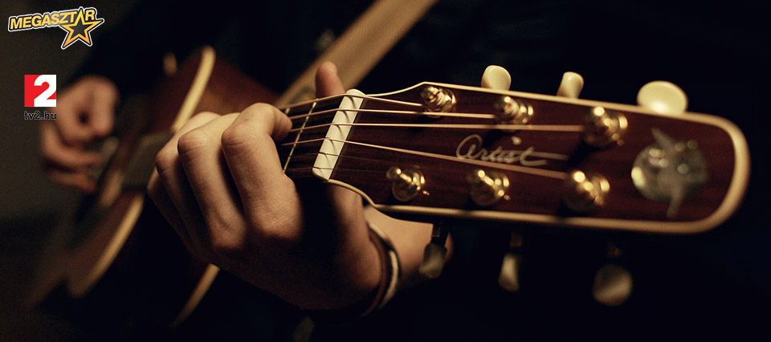

Megérkezett a klip!
Megérkezett a klip!
Nézd meg a Nézz rám c. dal klipjét!
...tovább

Zene!
A zenekar első dalát elérheted a dalok.hu-n!
...tovább
 Minden ami kép
Minden ami kép
Nézd meg az összes esemény és fotóit a zenekar életéből!
...tovább
Decemberi visszatekintés
Sziasztok :)
Nagyon dolgos Decemberen vagyunk túl -- a galériában meg is tudjátok nézni, hogy mekkora bulit csaptunk a Veres Pálné Gimnázium diákjainak, valamint hogy hogyan is töltöttük a Szilvesztert. Óriási buli volt mind a két helyszínen, így továbbra is csak bíztatni tudunk titeket: ha látjátok, hogy a közelben Farkas-Jenser Balázs és Zenekara játszik, mindenképpen gyertek! :)
Nézz ránk! :)
Üdv újra itt!:) Nagyon nagy örömünkre szolgál, hogy rengeteg munka és erőfeszítés után prezentálhatjuk nektek legelső klipünket.
Az igazat megvallva, nagyon izgatottan várjuk a reakcióitokat, hiszen tényleg ez a zenekar legelső klipje, és benne van szívünk-lelkünk.:)
Ha bármi gondolatod van a klippel kapcsolatban, a YouTube videó alatt, vagy a Facebook hivatalos oldalon, illetve Twitteren is leírhatod,
minden véleményre kívácsiak vagyunk! A Multimédia fül alatt is megtaláljátok a videót, ha esetleg a site-on belül szeretnétek nézni.:)
Nagyon szép napot mindenkinek!
Puszi / pacsi,
Balázs és a Zenekar
Hivatalos oldal indulàs
Sziasztok! Nagyon nagy örömünkre szolgál bemutatni nektek a zenekar hivatalos oldalát!! ( fanfárhang, tapsvihar:) )
Az oldal mindent igyekszik összegyűjteni, hogy Ti a lehető legtöbbet lássatok, halljatok belőlünk:) A micro-blog, ami itt fut,
a Facebooktól és a Twitter-hírektől is eltérő tartalommal vár, úgyhogy látogassatok gyakran fel, itt tudunk csak igazán mesélni!
Persze, a hosszabb sztorik első pár mondata fel fog kerülni Facebookra is, és ott tudtok kommentelni is, üzenni nekünk, kérdezni,
ígérjük, válaszolunk! Reméljük, elnyerte tetszéseteket, mindenkinek szép napot, hamarosan újra jelentkezünk!


{kind=link}